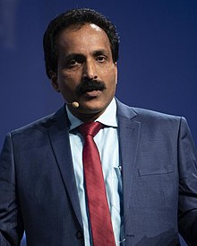

S. Somanath
1963 - Present
Sreedhara Panicker Somanath
Sreedhara Panicker Somanath July 1963- present is an Indian aerospace engineer serving as the chairman of the Indian Space Research Organisation (ISRO).Under his chairmanship, ISRO carried out the third Indian lunar exploration mission named Chandrayaan-3.
The lander named Vikram and the rover named Pragyan landed near the lunar south pole region on 23 August 2023 at 18:04 IST, making India the first country to successfully land a spacecraft near the lunar south pole and the fourth country to demonstrate soft landing on the Moon.
Biographies
- Somanath was born in a Malayali Hindu family.
- Somanath did his schooling at St. Augustine's High School, Aroor and completed his pre-university program from Maharaja's College, Ernakulam.
- He received his graduate degree in mechanical engineering from Thangal Kunju Musaliar College of Engineering, Kollam, Kerala University and a master's degree in aerospace engineering from Indian Institute of Science, Bangalore with specialization in dynamics and control.
- After his graduation, Somanath joined Vikram Sarabhai Space Centre in 1985.
- He was associated with Polar Satellite Launch Vehicle project during its initial phase. He became associate director of the Vikram Sarabhai Space Centre and the project director of Geosynchronous Satellite Launch Vehicle Mark III launch vehicle in 2010.
- He was also the deputy director of the Propulsion and Space Ordinance Entity till November 2014.
- In June 2015, he took over as director of Liquid Propulsion Systems Centre at Valiamala, Thiruvananthapuram and served until January 2018. Somanath took over as director of the Vikram Sarabhai Space Centre from K. Sivan who became chairman of Indian Space Research Organisation.